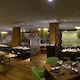

THE PARK

The Park, Kolkata is in close proximity to tourist attractions like Indian Museum and Victoria Memorial.
Just 750 m from Indian Museum and 1.3 km from Metro Shopping Centre, The Park Hotel offers Wi-Fi enabled rooms, conference facility, and restaurants.
Located on the posh Park Street, in the heart of Kolkata city, The Park Hotel offers luxurious accommodation along with warm hospitality. It can be reached within 10 minutes drive from the Sealdah Railway Station, while the NSCBI airport is just 30 minutes away from here. Prominent landmarks accessible within 10 minutes from the hotel include Birla Planetarium, Marble Palace, Camac Street and Howrah Bridge. The hotel has opulent suites and rooms that include 36 Deluxe Rooms, 36 Luxury Rooms, 60 Luxury Premium Rooms, 16 Residence Suites and 1 Presidential Suite. All these Wi-Fi enabled rooms and suites are equipped with modern amenities.
To meet the needs of business and leisure travellers, the hotel offers many facilities and services. For organising business meets and conferences, the hotel has multi-purpose halls that include The Galaxy, Pine Hall, Rosewood Hall, Banyan Room and Ebony Room. Other facilities provided by the hotel include gym, pool, Aura Spa and The Box- a shoppers paradise.
Guests can relish gourmet food at the in-house restaurants, namely Zen,Saffron and The Bridge. The hotel has myriad of bars, namely Roxy, Tantra and Someplace Else. Moreover, guests can also visit Street Cafe for light snacks and coffee.
Guests have access to numerous shopping and dining outlets, pubs, nightclubs in Park Street, which is considered as a major recreational zone in Kolkata
| RATINGS |
| HOTEL 5 STAR |
| LOCATION-4.68 |
| FACILITIES-3.96 |
| FOOD-4.02 |
| CLEANLINESS-4.15 |
| ROOMS-3.9 |
| HOSPITALITY-3.89 |
| LOCATION |
| LOCATED IN ENEGMATIC CITY OF KOLKATA |
| 4 KM FROM VICTORIA MEMORIAL |
| 1.3 KM FROM METRO SHOPPING CENTRE |
| 750 M FROM INDIAN MUSEUM |
| 1O MINUTES DRIVE TO RAILWAY STATION |
| 30 MINUTES DRIVE TO AIRPORT |
| 1O MINUTES DRIVE TO HOWRAH BRIDGE |
| 1O MINUTES DRIVE TO MARBLE PALACE |
HOTEL AMINITIES
| CHIC NIGHT CLUB |
| SALON |
| MULTI CUISINE ORIENTAL EXPRESS |
| FITNESS CENTER |
| SWIMING POOL |
| FITNESS CENTER |
| BEAUTY PARLOR |
| BARBER SHOP |
| BOUTIQUE SHOP |
| WIFI CINNECTIVITY |
| IN HOUSE LAUNDARY SERVICE |
| DOCTOR ON CALL |
| VALET CAR PARK |
| 24 HOUR CURRENCY EXCHANGE |
| BANQUET HALL |
|
MULTI PURPOSE HALLS
| THE GALAXY |
| EBONY ROOM |
| BANYAN ROOM |
| ROSEWOOD HALL |
| PINE HALL |
IN HOUSE RESTAURANT
| ZEN |
| SAFFRON |
| THE BRIDGE |
MYRIAD OF BARS
| TANTRA |
| ROXY |
| SOME PLACE ELSE |
|
ROOMS
| 36 DELUXE ROOMS |
| 36 LUXURY ROOMS |
| 60 LUXURY PREMIUM ROOMS |
| 16 RESIDENCY SUITES |
| 1 PRESIDENTIAL SUITE |